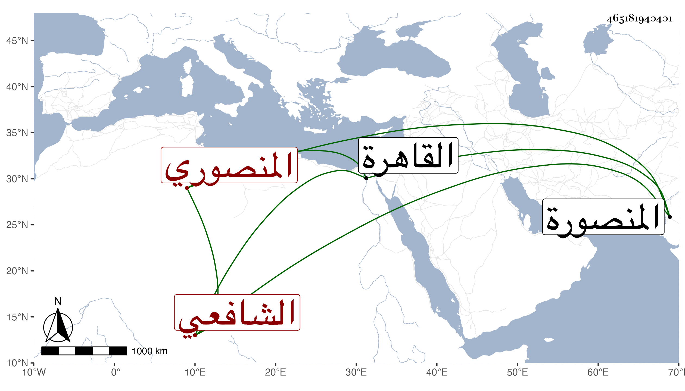

0902Sakhawi.DawLamic.ITO20230111-ara1.EIS1600.465181940401
Biography ID: 465181940401
481
محمد بن محمد بن محمد بن أحمد بن عمر بن كميل بن عوض بن رشيد ككبير الجلال بن البدر بن الشمس بن الشهاب بن السراج بن الكمال المنصوري الشافعي سبط الشهاب بن العجيمي والد أوحد الدين والماضي أبوه وجده ويعرف كسلفه بابن كميل . ولد في ربيع الأول سنة اثنتين وستين وثمانمائة بالمنصورة ونشأ بها وحفظ ألفية النحو وغيرها ، وأقام بالقاهرة مدة وبحث الألفية على إبراهيم بن أبي شريف مع بحث شرح إيساغوجي وتصريف العزي ومن شرح جمع الجوامع للمحلي قطعة وقرأ في تقسيم الفقه غير مرة على السنتاوي وكذا أخذ في الفقه وغيره عن جماعة وسمع مني ومن الديمي وجلس عند قريبه الزين قاسم شاهدا وهو متحرك مشارك في الفرائض والحساب وغيره ممن أذن له شيوخه .
